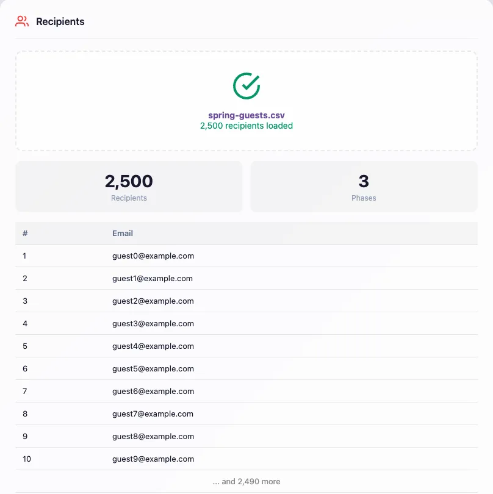
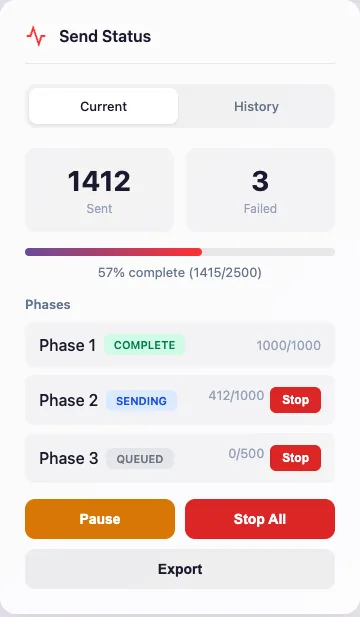

Bulk email app on Amazon SES
A desktop app that lets the New Door team write, queue and watch bulk email sent through Amazon SES.
Built for New Door Investments, December 2025 to September 2026. Electron, Docker and Amazon SES. The repository is private.

What it does
The New Door team sends the same email to thousands of people. Amazon SES sends at that volume for little money, but it has no screen for writing a campaign, loading a list or watching a send. The app gives someone who is not a developer a screen for those three jobs. The team sends about 25,000 emails a month with it, for about $8 a month.
It is an Electron desktop app. A small local server is bundled inside it and talks to SES, so credentials stay on the machine and nothing needs hosting. The window carries the RION Bulk Sender name, because the work was delivered through RION. A setup wizard connects to SES with SMTP credentials or AWS access keys, and then one screen covers the whole job.
- Write. A rich-text editor for the body, a sender chosen from the verified addresses, an optional reply-to address and attachments.
- Load. Drop in a CSV. The app checks every address and removes duplicates and invalid ones before anything is queued.
- Send. The list is cut into phases of 1,000 recipients. Each phase can be watched and stopped on its own.
- Control. Pause, resume, stop one phase or stop everything. The history keeps every past send, and results export as a CSV.
A send, phase by phase
The compose form is on the left and Send Status is on the right. Send Status shows how many messages have gone out, how many failed, a progress bar and the state of each phase. The panel below runs a 2,500-recipient send at the app’s rate of about 14 messages a second, with made-up numbers.
- Phase 1, 1,000 recipientsQueued
- Phase 2, 1,000 recipientsQueued
- Phase 3, 500 recipientsQueued


Rate limits and restarts
SES allows a fixed number of messages per second. The app sends about 14 a second, with a short pause after each message, and reuses a few connections, which keeps it under the SES rate limit. Phases make a long send easier to watch and to stop part-way.
The queue is saved to disk a moment after every change, so an interrupted send is still on record when the app opens again. The local server picks a free port starting at 3001 and shuts down with the app.
Changes after the first release
Pause and resume came first. Stop all and stop one phase were added later, each with a confirmation before it runs.
Signing out left the old server running on its port, and the next launch could not connect. The fix ends that process on sign-out and offers a restart in the setup wizard if the server does not answer.
I wrote a test plan for those three changes (sign-out, stop controls and the wizard restart). Each has a short list of steps to repeat on the next build. The repository has 188 commits.